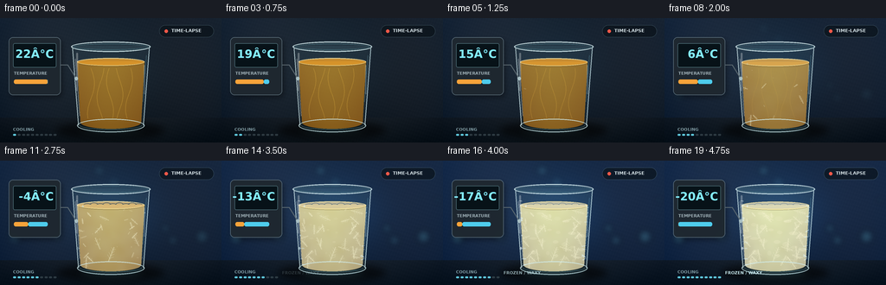
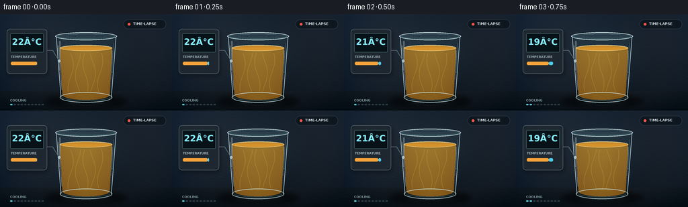

CODING AGENTS AS PIXEL WORLD MODELS
traex/GPT-5.6-Sol · phygen_094
点击播放 · 原生 RGB 像素
逐轮保存的候选
回放视频、检查图与代码变化。
每份候选均可单独播放。实际图片检查记录在下方工具轨迹中。
候选 01播放与检查图
点击播放 · 原生 RGB 像素


展开代码变化
--- 上一保存版本
+++ 本次保存版本
@@ -0,0 +1,300 @@
+from pathlib import Path
+import math
+import numpy as np
+from PIL import Image, ImageDraw, ImageFont, ImageFilter
+import artifact_io
+
+ROOT = Path(__file__).resolve().parent
+W, H, N = 256, 144, 20
+S = 4
+WS, HS = W*S, H*S
+rng = np.random.default_rng(9401)
+
+# Fonts bundled with the local OS, used only for an unobtrusive instrument readout.
+FONT_REG = "/usr/share/fonts/truetype/dejavu/DejaVuSans.ttf"
+FONT_BOLD = "/usr/share/fonts/truetype/dejavu/DejaVuSans-Bold.ttf"
+def font(px, bold=False):
+ return ImageFont.truetype(FONT_BOLD if bold else FONT_REG, px*S)
+
+def sc(v): return int(round(v*S))
+def box(t): return tuple(sc(x) for x in t)
+def smooth(x):
+ x = np.clip(x, 0.0, 1.0)
+ return x*x*(3-2*x)
+
+def alpha_comp(base, layer):
+ return Image.alpha_composite(base.convert('RGBA'), layer.convert('RGBA'))
+
+def blurred_ellipse(im, xy, fill, blur):
+ lay = Image.new('RGBA', im.size, (0,0,0,0))
+ ImageDraw.Draw(lay).ellipse(box(xy), fill=fill)
+ if blur: lay = lay.filter(ImageFilter.GaussianBlur(sc(blur)))
+ return alpha_comp(im, lay)
+
+# Stable cloud field and droplets; no temporal noise or flicker.
+small = rng.random((36, 64)).astype(np.float32)
+cloud = Image.fromarray(np.uint8(small*255), 'L').resize((WS,HS), Image.Resampling.BICUBIC).filter(ImageFilter.GaussianBlur(sc(5)))
+cloud_arr = np.asarray(cloud, dtype=np.float32)/255.0
+
+droplets = []
+for _ in range(45):
+ x = rng.uniform(88,168); y = rng.uniform(39,119)
+ # only near the walls, so the central sample stays legible
+ if min(x-88, 168-x) < rng.uniform(5,16):
+ droplets.append((x,y,rng.uniform(.35,1.15),rng.uniform(0.08,0.7)))
+
+# Crystal clusters are deterministic and reveal/grow as cooling proceeds.
+crystals=[]
+for k in range(39):
+ x=rng.uniform(94,162); y=rng.uniform(57,118)
+ threshold=rng.uniform(.26,.80)
+ # edges and bottom nucleate first, as in cooling oil/wax
+ edge=min(x-92,166-x,121-y)
+ threshold -= max(0, (9-edge))*0.018
+ angle=rng.uniform(-math.pi, math.pi)
+ length=rng.uniform(6,18)
+ crystals.append((x,y,threshold,angle,length,rng.integers(2,5)))
+
+frost_branches=[]
+for side in [-1,1]:
+ for j in range(12):
+ y=rng.uniform(43,120); x=(87+(y-35)*.055) if side<0 else (169-(y-35)*.055)
+ frost_branches.append((x,y,side,rng.uniform(-.65,.65),rng.uniform(2.3,7),rng.uniform(.45,.85)))
+
+# Background bokeh positions.
+bokeh=[(rng.uniform(5,250),rng.uniform(7,112),rng.uniform(2,8),rng.uniform(.10,.34)) for _ in range(18)]
+
+def make_background(p):
+ yy,xx=np.mgrid[0:HS,0:WS]
+ X=xx/S; Y=yy/S
+ # Cool studio/laboratory background; the color temperature visibly falls.
+ cold=smooth((p-.08)/.82)
+ r=19 + 12*(1-Y/H) + 4*np.sin(X/31)
+ g=28 + 14*(1-Y/H) + cold*8 + 4*np.sin(X/37+.5)
+ b=37 + 17*(1-Y/H) + cold*24 + 5*np.sin(X/43+1)
+ # soft cyan back-light behind the glass
+ halo=np.exp(-(((X-132)/72)**2+((Y-61)/58)**2)*2.0)
+ r += halo*(4+2*cold); g += halo*(8+12*cold); b += halo*(10+25*cold)
+ # tabletop
+ table=Y>115
+ r[table]=16 + 8*(1-(Y[table]-115)/29)
+ g[table]=23 + 8*(1-(Y[table]-115)/29) + 3*cold
+ b[table]=28 + 10*(1-(Y[table]-115)/29) + 8*cold
+ # vignette
+ vig=np.clip(((X-128)/150)**2+((Y-70)/105)**2,0,1)
+ r-=vig*12; g-=vig*11; b-=vig*9
+ # very subtle fixed sensor grain
+ grain=(np.sin(X*1.91+Y*.73)+np.sin(X*.41-Y*1.37))*0.65
+ arr=np.stack([r+grain,g+grain,b+grain],axis=-1)
+ return Image.fromarray(np.uint8(np.clip(arr,0,255)),'RGB').convert('RGBA')
+
+def draw_crystals(p, liquid_mask):
+ lay=Image.new('RGBA',(WS,HS),(0,0,0,0)); d=ImageDraw.Draw(lay)
+ for x,y,th,a,L,arms in crystals:
+ q=smooth((p-th)/.23)
+ if q<=0: continue
+ ll=L*q
+ # Main needle / wax platelet axis
+ x2=x+math.cos(a)*ll; y2=y+math.sin(a)*ll
+ col=(245,242,205,int(70+125*q))
+ d.line((sc(x),sc(y),sc(x2),sc(y2)),fill=col,width=max(sc(.45),1))
+ # soft parallel edge makes platelets, not simple graphic stars
+ nxa=-math.sin(a)*.75; nya=math.cos(a)*.75
+ d.line((sc(x+nxa),sc(y+nya),sc(x2+nxa),sc(y2+nya)),fill=(255,252,222,int(30+75*q)),width=max(sc(.3),1))
+ for j in range(1,int(arms)+1):
+ f=j/(arms+1); bx=x+(x2-x)*f; by=y+(y2-y)*f
+ for sg in (-1,1):
+ aa=a+sg*(.68+rng_static(x,y,j)*.23)
+ bl=ll*(.16+.16*(1-f))*q
+ d.line((sc(bx),sc(by),sc(bx+math.cos(aa)*bl),sc(by+math.sin(aa)*bl)),
+ fill=(250,248,220,int(38+100*q)),width=max(sc(.32),1))
+ # clip all crystals to oil
+ a=np.asarray(lay.getchannel('A'),dtype=np.uint16)
+ m=np.asarray(liquid_mask,dtype=np.uint16)
+ lay.putalpha(Image.fromarray(np.uint8(a*m//255),'L'))
+ return lay
+
+def rng_static(x,y,j):
+ return (math.sin(x*12.9898+y*78.233+j*37.17)*43758.5453)%1
+
+def glass_masks(surface_y):
+ outer=Image.new('L',(WS,HS),0); d=ImageDraw.Draw(outer)
+ d.polygon([(sc(83),sc(32)),(sc(173),sc(32)),(sc(166),sc(126)),(sc(90),sc(126))],fill=255)
+ d.ellipse(box((90,117,166,133)),fill=255)
+ liquid=Image.new('L',(WS,HS),0); q=ImageDraw.Draw(liquid)
+ q.polygon([(sc(89),sc(surface_y)),(sc(167),sc(surface_y)),(sc(163),sc(121)),(sc(93),sc(121))],fill=255)
+ q.ellipse(box((93,113,163,128)),fill=255)
+ return outer,liquid
+
+def draw_instrument(im,p,temp):
+ # A believable compact digital probe, not a floating caption.
+ shadow=Image.new('RGBA',im.size,(0,0,0,0)); sd=ImageDraw.Draw(shadow)
+ sd.rounded_rectangle(box((12,25,72,92)),radius=sc(5),fill=(0,0,0,90))
+ shadow=shadow.filter(ImageFilter.GaussianBlur(sc(3))); im=alpha_comp(im,shadow)
+ lay=Image.new('RGBA',im.size,(0,0,0,0)); d=ImageDraw.Draw(lay)
+ d.rounded_rectangle(box((10,22,70,89)),radius=sc(5),fill=(31,40,48,242),outline=(111,132,143,180),width=sc(.7))
+ d.rounded_rectangle(box((15,29,65,57)),radius=sc(2),fill=(7,18,24,255),outline=(70,100,109,255),width=sc(.7))
+ col=(131,237,255,255)
+ label=f"{temp:+d}°C" if temp<0 else f"{temp:d}°C"
+ # fit negative temperatures and degree sign
+ f=font(13,True)
+ bb=d.textbbox((0,0),label,font=f); tw=bb[2]-bb[0]
+ d.text((sc(62)-tw,sc(34)-bb[1]),label,font=f,fill=col)
+ d.text(box((16,61)),"TEMPERATURE",font=font(4.7,True),fill=(157,174,181,255))
+ # descending mini gauge and snow symbol
+ d.rounded_rectangle(box((16,71,55,76)),radius=sc(2),fill=(12,23,29,255))
+ d.rounded_rectangle(box((16,71,16+39*(1-p),76)),radius=sc(2),fill=(246,163,58,255))
+ d.rounded_rectangle(box((16+39*(1-p),71,55,76)),radius=sc(2),fill=(78,204,236,255))
+ # probe wire to glass
+ d.line((sc(70),sc(54),sc(78),sc(54),sc(88),sc(70)),fill=(98,111,117,220),width=sc(1))
+ d.ellipse(box((86.4,67.8,90,72)),fill=(169,192,196,255))
+ return alpha_comp(im,lay)
+
+def render(i):
+ p=i/(N-1)
+ cp=smooth(p)
+ temp=round(22-42*cp)
+ im=make_background(p)
+ # Background bokeh becomes frost-blue as the chamber cools.
+ bok=Image.new('RGBA',im.size,(0,0,0,0)); bd=ImageDraw.Draw(bok)
+ for x,y,r,a in bokeh:
+ bd.ellipse(box((x-r,y-r,x+r,y+r)),fill=(101,195,220,int(255*a*smooth((p-.18)/.7))))
+ bok=bok.filter(ImageFilter.GaussianBlur(sc(3.5))); im=alpha_comp(im,bok)
+
+ # Table reflection and cast shadow anchor the stationary tumbler.
+ im=blurred_ellipse(im,(65,119,190,141),(0,0,0,145),4)
+ refl=Image.new('RGBA',im.size,(0,0,0,0)); rd=ImageDraw.Draw(refl)
+ rd.ellipse(box((88,123,169,139)),fill=(91,164,170,int(18+22*cp)))
+ refl=refl.filter(ImageFilter.GaussianBlur(sc(5))); im=alpha_comp(im,refl)
+
+ surface_y=50+1.2*cp # slight thermal contraction
+ outer,liquid_mask=glass_masks(surface_y)
+
+ # Faint body of thick clear glass.
+ glass=Image.new('RGBA',im.size,(0,0,0,0)); gd=ImageDraw.Draw(glass)
+ gd.bitmap((0,0),outer,fill=(121,183,194,18+int(13*cp)))
+ im=alpha_comp(im,glass)
+
+ # Oil: amber/translucent -> pale, cloudy and almost opaque at very low temperature.
+ yy,xx=np.mgrid[0:HS,0:WS]; X=xx/S; Y=yy/S
+ opaque=smooth((p-.16)/.78)
+ # warm amber loses saturation and luminosity becomes diffuse/waxy
+ warm=np.array([205,133,25.]); cold=np.array([218,215,171.])
+ base=warm*(1-opaque)+cold*opaque
+ center=np.exp(-((X-127)/35)**2)
+ vertical=np.clip((Y-surface_y)/76,0,1)
+ marb=(cloud_arr-.5)
+ R=base[0]+19*center-24*vertical + marb*32*opaque
+ G=base[1]+25*center-28*vertical + marb*40*opaque
+ B=base[2]+9*center-9*vertical + marb*49*opaque
+ # strong turbid streaks begin before full crystallization
+ milky=np.clip((cloud_arr-.42)*3.3,0,1)*smooth((p-.22)/.5)
+ R=R*(1-milky*.20)+235*milky*.20
+ G=G*(1-milky*.20)+232*milky*.20
+ B=B*(1-milky*.20)+200*milky*.20
+ A=np.asarray(liquid_mask,dtype=np.float32)*(0.64+0.31*opaque)
+ oilarr=np.dstack([R,G,B,A]).clip(0,255).astype(np.uint8)
+ im=alpha_comp(im,Image.fromarray(oilarr,'RGBA'))
+
+ # Early convection ribbons fade as viscosity rises.
+ ribbons=Image.new('RGBA',im.size,(0,0,0,0)); rr=ImageDraw.Draw(ribbons)
+ ribbon_alpha=int(62*(1-smooth((p-.12)/.48)))
+ for k in range(5):
+ pts=[]
+ for z in np.linspace(0,1,28):
+ y=58+58*z
+ x=105+k*11+4*math.sin(z*5.2+k*1.7+p*2.2)
+ pts.append((sc(x),sc(y)))
+ rr.line(pts,fill=(255,202,74,ribbon_alpha),width=sc(.65))
+ ra=np.asarray(ribbons.getchannel('A'),dtype=np.uint16)*np.asarray(liquid_mask,dtype=np.uint16)//255
+ ribbons.putalpha(Image.fromarray(ra.astype(np.uint8),'L'))
+ im=alpha_comp(im,ribbons)
+
+ # Growing wax-fat crystal lattice within the oil.
+ im=alpha_comp(im,draw_crystals(p,liquid_mask))
+
+ # Late stage: irregular congealed islands below the meniscus.
+ chunks=Image.new('RGBA',im.size,(0,0,0,0)); cd=ImageDraw.Draw(chunks)
+ q=smooth((p-.55)/.38)
+ for k in range(24):
+ cx=96+(k*37%65); cy=60+(k*23%59)
+ rx=2.2+(k%5)*.75; ry=1.4+(k%3)*.65
+ cd.ellipse(box((cx-rx*q,cy-ry*q,cx+rx*q,cy+ry*q)),fill=(245,240,205,int(q*(38+(k%4)*12))))
+ ca=np.asarray(chunks.getchannel('A'),dtype=np.uint16)*np.asarray(liquid_mask,dtype=np.uint16)//255
+ chunks.putalpha(Image.fromarray(ca.astype(np.uint8),'L')); im=alpha_comp(im,chunks)
+
+ # Meniscus evolves from a transparent golden surface to a matte wrinkled skin.
+ top=Image.new('RGBA',im.size,(0,0,0,0)); td=ImageDraw.Draw(top)
+ topcol=(222-int(5*opaque),151+int(62*opaque),42+int(139*opaque),225)
+ td.ellipse(box((89,surface_y-4,167,surface_y+5)),fill=topcol,outline=(255,231,155,190),width=sc(.65))
+ # rear/near highlights imply curved liquid surface
+ td.arc(box((89,surface_y-4,167,surface_y+5)),180,360,fill=(255,236,170,210),width=sc(1))
+ td.arc(box((91,surface_y-2,165,surface_y+6)),5,175,fill=(108,76,31,100),width=sc(.6))
+ if q>0:
+ for k in range(9):
+ x=96+k*7.4
+ td.arc(box((x,surface_y-1.3-(k%2),x+10,surface_y+3+(k%3)*.4)),185,348,fill=(250,246,219,int(110*q)),width=sc(.55))
+ im=alpha_comp(im,top)
+
+ # Condensation beads appear, then freeze into pinprick frost.
+ beads=Image.new('RGBA',im.size,(0,0,0,0)); dd=ImageDraw.Draw(beads)
+ for x,y,r,onset in droplets:
+ v=smooth((p-onset)/.22)
+ if v<=0: continue
+ ice=smooth((p-.58)/.3)
+ dd.ellipse(box((x-r,y-r*1.25,x+r,y+r*1.25)),fill=(163+int(65*ice),211+int(30*ice),222+int(28*ice),int(55+105*v)),outline=(231,251,255,int(80+100*v)),width=max(1,sc(.25)))
+ dd.ellipse(box((x-r*.42,y-r*.78,x-r*.02,y-r*.28)),fill=(255,255,255,int(100*v)))
+ im=alpha_comp(im,beads)
+
+ # Frost dendrites advance inward from glass walls and base.
+ frost=Image.new('RGBA',im.size,(0,0,0,0)); fd=ImageDraw.Draw(frost)
+ for x,y,side,ang,L,onset in frost_branches:
+ f=smooth((p-onset)/.22)
+ if f<=0: continue
+ a=(0 if side<0 else math.pi)+ang
+ ex=x+math.cos(a)*L*f; ey=y+math.sin(a)*L*f
+ fd.line((sc(x),sc(y),sc(ex),sc(ey)),fill=(222,248,255,int(110+110*f)),width=sc(.5))
+ for z in (.38,.68):
+ bx=x+(ex-x)*z; by=y+(ey-y)*z
+ for sg in (-1,1):
+ aa=a+sg*.86
+ ll=L*.24*f
+ fd.line((sc(bx),sc(by),sc(bx+math.cos(aa)*ll),sc(by+math.sin(aa)*ll)),fill=(233,252,255,int(80+100*f)),width=max(1,sc(.32)))
+ im=alpha_comp(im,frost)
+
+ # Thick glass geometry and crisp optical highlights are always rendered last.
+ rim=Image.new('RGBA',im.size,(0,0,0,0)); d=ImageDraw.Draw(rim)
+ d.ellipse(box((82,27,174,39)),fill=(140,193,202,25),outline=(221,245,247,205),width=sc(1.15))
+ d.ellipse(box((85,29.5,171,36.8)),outline=(79,126,138,165),width=sc(.7))
+ d.line((sc(83.5),sc(33),sc(90.5),sc(124)),fill=(224,246,248,175),width=sc(1.05))
+ d.line((sc(172.5),sc(33),sc(165.5),sc(124)),fill=(215,243,248,178),width=sc(1.05))
+ d.line((sc(87),sc(47),sc(92),sc(113)),fill=(255,255,255,92),width=sc(.65))
+ d.line((sc(169),sc(43),sc(165),sc(97)),fill=(135,219,234,85),width=sc(.55))
+ d.ellipse(box((89,116.5,167,132)),outline=(209,239,242,196),width=sc(1.1))
+ d.arc(box((92,119,164,129)),0,180,fill=(71,112,120,180),width=sc(.75))
+ # narrow specular streaks
+ d.rounded_rectangle(box((88,40,90,84)),radius=sc(1),fill=(255,255,255,72))
+ d.rounded_rectangle(box((166,54,167.2,88)),radius=sc(.6),fill=(217,250,255,62))
+ im=alpha_comp(im,rim)
+
+ im=draw_instrument(im,p,temp)
+
+ # Small, restrained time-lapse recorder indicator.
+ ui=Image.new('RGBA',im.size,(0,0,0,0)); ud=ImageDraw.Draw(ui)
+ ud.rounded_rectangle(box((184,8,247,22)),radius=sc(7),fill=(7,15,21,155),outline=(92,122,132,100),width=sc(.5))
+ ud.ellipse(box((190,13,194,17)),fill=(238,88,72,255))
+ ud.text(box((198,11.2)),"TIME-LAPSE",font=font(5.2,True),fill=(220,232,236,245))
+ # unobtrusive cooling-stage ticks at bottom
+ ud.text(box((15,126)),"COOLING",font=font(4.8,True),fill=(148,179,187,210))
+ for k in range(10):
+ active=(k/9)<=p
+ ud.rounded_rectangle(box((15+k*5.2,134,18.5+k*5.2,136)),radius=sc(1),fill=((105,220,241,230) if active else (77,93,100,135)))
+ snow_a=int(245*smooth((p-.66)/.28))
+ ud.text(box((70,127)),"FROZEN / WAXY",font=font(4.8,True),fill=(205,239,244,snow_a))
+ im=alpha_comp(im,ui)
+
+ return np.asarray(im.convert('RGB').resize((W,H),Image.Resampling.LANCZOS),dtype=np.uint8)
+
+frames=np.stack([render(i) for i in range(N)],axis=0)
+artifact_io.save(frames, ROOT)
+print(f"saved {frames.shape} {frames.dtype}; temperature 22C to -20C")
候选 02播放与检查图
点击播放 · 原生 RGB 像素

展开代码变化
--- 上一保存版本
+++ 本次保存版本
@@ -135,7 +135,8 @@
d.rounded_rectangle(box((10,22,70,89)),radius=sc(5),fill=(31,40,48,242),outline=(111,132,143,180),width=sc(.7))
d.rounded_rectangle(box((15,29,65,57)),radius=sc(2),fill=(7,18,24,255),outline=(70,100,109,255),width=sc(.7))
col=(131,237,255,255)
- label=f"{temp:+d}°C" if temp<0 else f"{temp:d}°C"
+ degree = "\N{DEGREE SIGN}"
+ label=f"{temp:+d}{degree}C" if temp<0 else f"{temp:d}{degree}C"
# fit negative temperatures and degree sign
f=font(13,True)
bb=d.textbbox((0,0),label,font=f); tw=bb[2]-bb[0]
候选 03播放与检查图
可观测工具轨迹
实际执行的命令与返回图片。
命令 1exit 0
/bin/bash -lc "cat prompt.txt && printf '\\n--- GENERATION_RULES ---\\n' && cat GENERATION_RULES.md && printf '\\n--- TASK_SPEC ---\\n' && cat task_spec.json"
命令 2exit 0
/bin/bash -lc "find . -maxdepth 3 -type f -printf '%p\\n' | sort && printf '\\n--- tools ---\\n' && command -v ffmpeg || true && command -v python3 || true && python3 - <<'PY' mods=['numpy','PIL','cv2','cairo','moderngl','moviepy','scipy'] for m in mods: try: x=__import__(m); print(m,'OK',getattr(x,'__version__','')) except Exception as e: print(m,'NO',e) PY"
命令 3exit 0
/bin/bash -lc 'cat artifact_io.py'
命令 4exit 0
/bin/bash -lc "cat > generate.py <<'PY'
from pathlib import Path
import math
import numpy as np
from PIL import Image, ImageDraw, ImageFont, ImageFilter
import artifact_io
ROOT = Path(__file__).resolve().parent
W, H, N = 256, 144, 20
S = 4
WS, HS = W*S, H*S
rng = np.random.default_rng(9401)
# Fonts bundled with the local OS, used only for an unobtrusive instrument readout.
FONT_REG = \"/usr/share/fonts/truetype/dejavu/DejaVuSans.ttf\"
FONT_BOLD = \"/usr/share/fonts/truetype/dejavu/DejaVuSans-Bold.ttf\"
def font(px, bold=False):
return ImageFont.truetype(FONT_BOLD if bold else FONT_REG, px*S)
def sc(v): return int(round(v*S))
def box(t): return tuple(sc(x) for x in t)
def smooth(x):
x = np.clip(x, 0.0, 1.0)
return x*x*(3-2*x)
def alpha_comp(base, layer):
return Image.alpha_composite(base.convert('RGBA'), layer.convert('RGBA'))
def blurred_ellipse(im, xy, fill, blur):
lay = Image.new('RGBA', im.size, (0,0,0,0))
ImageDraw.Draw(lay).ellipse(box(xy), fill=fill)
if blur: lay = lay.filter(ImageFilter.GaussianBlur(sc(blur)))
return alpha_comp(im, lay)
# Stable cloud field and droplets; no temporal noise or flicker.
small = rng.random((36, 64)).astype(np.float32)
cloud = Image.fromarray(np.uint8(small*255), 'L').resize((WS,HS), Image.Resampling.BICUBIC).filter(ImageFilter.GaussianBlur(sc(5)))
cloud_arr = np.asarray(cloud, dtype=np.float32)/255.0
droplets = []
for _ in range(45):
x = rng.uniform(88,168); y = rng.uniform(39,119)
# only near the walls, so the central sample stays legible
if min(x-88, 168-x) < rng.uniform(5,16):
droplets.append((x,y,rng.uniform(.35,1.15),rng.uniform(0.08,0.7)))
# Crystal clusters are deterministic and reveal/grow as cooling proceeds.
crystals=[]
for k in range(39):
x=rng.uniform(94,162); y=rng.uniform(57,118)
threshold=rng.uniform(.26,.80)
# edges and bottom nucleate first, as in cooling oil/wax
edge=min(x-92,166-x,121-y)
threshold -= max(0, (9-edge))*0.018
angle=rng.uniform(-math.pi, math.pi)
length=rng.uniform(6,18)
crystals.append((x,y,threshold,angle,length,rng.integers(2,5)))
frost_branches=[]
for side in [-1,1]:
for j in range(12):
y=rng.uniform(43,120); x=(87+(y-35)*.055) if side<0 else (169-(y-35)*.055)
frost_branches.append((x,y,side,rng.uniform(-.65,.65),rng.uniform(2.3,7),rng.uniform(.45,.85)))
# Background bokeh positions.
bokeh=[(rng.uniform(5,250),rng.uniform(7,112),rng.uniform(2,8),rng.uniform(.10,.34)) for _ in range(18)]
def make_background(p):
yy,xx=np.mgrid[0:HS,0:WS]
X=xx/S; Y=yy/S
# Cool studio/laboratory background; the color temperature visibly falls.
cold=smooth((p-.08)/.82)
r=19 + 12*(1-Y/H) + 4*np.sin(X/31)
g=28 + 14*(1-Y/H) + cold*8 + 4*np.sin(X/37+.5)
b=37 + 17*(1-Y/H) + cold*24 + 5*np.sin(X/43+1)
# soft cyan back-light behind the glass
halo=np.exp(-(((X-132)/72)**2+((Y-61)/58)**2)*2.0)
r += halo*(4+2*cold); g += halo*(8+12*cold); b += halo*(10+25*cold)
# tabletop
table=Y>115
r[table]=16 + 8*(1-(Y[table]-115)/29)
g[table]=23 + 8*(1-(Y[table]-115)/29) + 3*cold
b[table]=28 + 10*(1-(Y[table]-115)/29) + 8*cold
# vignette
vig=np.clip(((X-128)/150)**2+((Y-70)/105)**2,0,1)
r-=vig*12; g-=vig*11; b-=vig*9
# very subtle fixed sensor grain
grain=(np.sin(X*1.91+Y*.73)+np.sin(X*.41-Y*1.37))*0.65
arr=np.stack([r+grain,g+grain,b+grain],axis=-1)
return Image.fromarray(np.uint8(np.clip(arr,0,255)),'RGB').convert('RGBA')
def draw_crystals(p, liquid_mask):
lay=Image.new('RGBA',(WS,HS),(0,0,0,0)); d=ImageDraw.Draw(lay)
for x,y,th,a,L,arms in crystals:
q=smooth((p-th)/.23)
if q<=0: continue
ll=L*q
# Main needle / wax platelet axis
x2=x+math.cos(a)*ll; y2=y+math.sin(a)*ll
col=(245,242,205,int(70+125*q))
d.line((sc(x),sc(y),sc(x2),sc(y2)),fill=col,width=max(sc(.45),1))
# soft parallel edge makes platelets, not simple graphic stars
nxa=-math.sin(a)*.75; nya=math.cos(a)*.75
d.line((sc(x+nxa),sc(y+nya),sc(x2+nxa),sc(y2+nya)),fill=(255,252,222,int(30+75*q)),width=max(sc(.3),1))
for j in range(1,int(arms)+1):
f=j/(arms+1); bx=x+(x2-x)*f; by=y+(y2-y)*f
for sg in (-1,1):
aa=a+sg*(.68+rng_static(x,y,j)*.23)
bl=ll*(.16+.16*(1-f))*q
d.line((sc(bx),sc(by),sc(bx+math.cos(aa)*bl),sc(by+math.sin(aa)*bl)),
fill=(250,248,220,int(38+100*q)),width=max(sc(.32),1))
# clip all crystals to oil
a=np.asarray(lay.getchannel('A'),dtype=np.uint16)
m=np.asarray(liquid_mask,dtype=np.uint16)
lay.putalpha(Image.fromarray(np.uint8(a*m//255),'L'))
return lay
def rng_static(x,y,j):
return (math.sin(x*12.9898+y*78.233+j*37.17)*43758.5453)%1
def glass_masks(surface_y):
outer=Image.new('L',(WS,HS),0); d=ImageDraw.Draw(outer)
d.polygon([(sc(83),sc(32)),(sc(173),sc(32)),(sc(166),sc(126)),(sc(90),sc(126))],fill=255)
d.ellipse(box((90,117,166,133)),fill=255)
liquid=Image.new('L',(WS,HS),0); q=ImageDraw.Draw(liquid)
q.polygon([(sc(89),sc(surface_y)),(sc(167),sc(surface_y)),(sc(163),sc(121)),(sc(93),sc(121))],fill=255)
q.ellipse(box((93,113,163,128)),fill=255)
return outer,liquid
def draw_instrument(im,p,temp):
# A believable compact digital probe, not a floating caption.
shadow=Image.new('RGBA',im.size,(0,0,0,0)); sd=ImageDraw.Draw(shadow)
sd.rounded_rectangle(box((12,25,72,92)),radius=sc(5),fill=(0,0,0,90))
shadow=shadow.filter(ImageFilter.GaussianBlur(sc(3))); im=alpha_comp(im,shadow)
lay=Image.new('RGBA',im.size,(0,0,0,0)); d=ImageDraw.Draw(lay)
d.rounded_rectangle(box((10,22,70,89)),radius=sc(5),fill=(31,40,48,242),outline=(111,132,143,180),width=sc(.7))
d.rounded_rectangle(box((15,29,65,57)),radius=sc(2),fill=(7,18,24,255),outline=(70,100,109,255),width=sc(.7))
col=(131,237,255,255)
label=f\"{temp:+d}°C\" if temp<0 else f\"{temp:d}°C\"
# fit negative temperatures and degree sign
f=font(13,True)
bb=d.textbbox((0,0),label,font=f); tw=bb[2]-bb[0]
d.text((sc(62)-tw,sc(34)-bb[1]),label,font=f,fill=col)
d.text(box((16,61)),\"TEMPERATURE\",font=font(4.7,True),fill=(157,174,181,255))
# descending mini gauge and snow symbol
d.rounded_rectangle(box((16,71,55,76)),radius=sc(2),fill=(12,23,29,255))
d.rounded_rectangle(box((16,71,16+39*(1-p),76)),radius=sc(2),fill=(246,163,58,255))
d.rounded_rectangle(box((16+39*(1-p),71,55,76)),radius=sc(2),fill=(78,204,236,255))
# probe wire to glass
d.line((sc(70),sc(54),sc(78),sc(54),sc(88),sc(70)),fill=(98,111,117,220),width=sc(1))
d.ellipse(box((86.4,67.8,90,72)),fill=(169,192,196,255))
return alpha_comp(im,lay)
def render(i):
p=i/(N-1)
cp=smooth(p)
temp=round(22-42*cp)
im=make_background(p)
# Background bokeh becomes frost-blue as the chamber cools.
bok=Image.new('RGBA',im.size,(0,0,0,0)); bd=ImageDraw.Draw(bok)
for x,y,r,a in bokeh:
bd.ellipse(box((x-r,y-r,x+r,y+r)),fill=(101,195,220,int(255*a*smooth((p-.18)/.7))))
bok=bok.filter(ImageFilter.GaussianBlur(sc(3.5))); im=alpha_comp(im,bok)
# Table reflection and cast shadow anchor the stationary tumbler.
im=blurred_ellipse(im,(65,119,190,141),(0,0,0,145),4)
refl=Image.new('RGBA',im.size,(0,0,0,0)); rd=ImageDraw.Draw(refl)
rd.ellipse(box((88,123,169,139)),fill=(91,164,170,int(18+22*cp)))
refl=refl.filter(ImageFilter.GaussianBlur(sc(5))); im=alpha_comp(im,refl)
surface_y=50+1.2*cp # slight thermal contraction
outer,liquid_mask=glass_masks(surface_y)
# Faint body of thick clear glass.
glass=Image.new('RGBA',im.size,(0,0,0,0)); gd=ImageDraw.Draw(glass)
gd.bitmap((0,0),outer,fill=(121,183,194,18+int(13*cp)))
im=alpha_comp(im,glass)
# Oil: amber/translucent -> pale, cloudy and almost opaque at very low temperature.
yy,xx=np.mgrid[0:HS,0:WS]; X=xx/S; Y=yy/S
opaque=smooth((p-.16)/.78)
# warm amber loses saturation and luminosity becomes diffuse/waxy
warm=np.array([205,133,25.]); cold=np.array([218,215,171.])
base=warm*(1-opaque)+cold*opaque
center=np.exp(-((X-127)/35)**2)
vertical=np.clip((Y-surface_y)/76,0,1)
marb=(cloud_arr-.5)
R=base[0]+19*center-24*vertical + marb*32*opaque
G=base[1]+25*center-28*vertical + marb*40*opaque
B=base[2]+9*center-9*vertical + marb*49*opaque
# strong turbid streaks begin before full crystallization
milky=np.clip((cloud_arr-.42)*3.3,0,1)*smooth((p-.22)/.5)
R=R*(1-milky*.20)+235*milky*.20
G=G*(1-milky*.20)+232*milky*.20
B=B*(1-milky*.20)+200*milky*.20
A=np.asarray(liquid_mask,dtype=np.float32)*(0.64+0.31*opaque)
oilarr=np.dstack([R,G,B,A]).clip(0,255).astype(np.uint8)
im=alpha_comp(im,Image.fromarray(oilarr,'RGBA'))
# Early convection ribbons fade as viscosity rises.
ribbons=Image.new('RGBA',im.size,(0,0,0,0)); rr=ImageDraw.Draw(ribbons)
ribbon_alpha=int(62*(1-smooth((p-.12)/.48)))
for k in range(5):
pts=[]
for z in np.linspace(0,1,28):
y=58+58*z
x=105+k*11+4*math.sin(z*5.2+k*1.7+p*2.2)
pts.append((sc(x),sc(y)))
rr.line(pts,fill=(255,202,74,ribbon_alpha),width=sc(.65))
ra=np.asarray(ribbons.getchannel('A'),dtype=np.uint16)*np.asarray(liquid_mask,dtype=np.uint16)//255
ribbons.putalpha(Image.fromarray(ra.astype(np.uint8),'L'))
im=alpha_comp(im,ribbons)
# Growing wax-fat crystal lattice within the oil.
im=alpha_comp(im,draw_crystals(p,liquid_mask))
# Late stage: irregular congealed islands below the meniscus.
chunks=Image.new('RGBA',im.size,(0,0,0,0)); cd=ImageDraw.Draw(chunks)
q=smooth((p-.55)/.38)
for k in range(24):
cx=96+(k*37%65); cy=60+(k*23%59)
rx=2.2+(k%5)*.75; ry=1.4+(k%3)*.65
cd.ellipse(box((cx-rx*q,cy-ry*q,cx+rx*q,cy+ry*q)),fill=(245,240,205,int(q*(38+(k%4)*12))))
ca=np.asarray(chunks.getchannel('A'),dtype=np.uint16)*np.asarray(liquid_mask,dtype=np.uint16)//255
chunks.putalpha(Image.fromarray(ca.astype(np.uint8),'L')); im=alpha_comp(im,chunks)
# Meniscus evolves from a transparent golden surface to a matte wrinkled skin.
top=Image.new('RGBA',im.size,(0,0,0,0)); td=ImageDraw.Draw(top)
topcol=(222-int(5*opaque),151+int(62*opaque),42+int(139*opaque),225)
td.ellipse(box((89,surface_y-4,167,surface_y+5)),fill=topcol,outline=(255,231,155,190),width=sc(.65))
# rear/near highlights imply curved liquid surface
td.arc(box((89,surface_y-4,167,surface_y+5)),180,360,fill=(255,236,170,210),width=sc(1))
td.arc(box((91,surface_y-2,165,surface_y+6)),5,175,fill=(108,76,31,100),width=sc(.6))
if q>0:
for k in range(9):
x=96+k*7.4
td.arc(box((x,surface_y-1.3-(k%2),x+10,surface_y+3+(k%3)*.4)),185,348,fill=(250,246,219,int(110*q)),width=sc(.55))
im=alpha_comp(im,top)
# Condensation beads appear, then freeze into pinprick frost.
beads=Image.new('RGBA',im.size,(0,0,0,0)); dd=ImageDraw.Draw(beads)
for x,y,r,onset in droplets:
v=smooth((p-onset)/.22)
if v<=0: continue
ice=smooth((p-.58)/.3)
dd.ellipse(box((x-r,y-r*1.25,x+r,y+r*1.25)),fill=(163+int(65*ice),211+int(30*ice),222+int(28*ice),int(55+105*v)),outline=(231,251,255,int(80+100*v)),width=max(1,sc(.25)))
dd.ellipse(box((x-r*.42,y-r*.78,x-r*.02,y-r*.28)),fill=(255,255,255,int(100*v)))
im=alpha_comp(im,beads)
# Frost dendrites advance inward from glass walls and base.
frost=Image.new('RGBA',im.size,(0,0,0,0)); fd=ImageDraw.Draw(frost)
for x,y,side,ang,L,onset in frost_branches:
f=smooth((p-onset)/.22)
if f<=0: continue
a=(0 if side<0 else math.pi)+ang
ex=x+math.cos(a)*L*f; ey=y+math.sin(a)*L*f
fd.line((sc(x),sc(y),sc(ex),sc(ey)),fill=(222,248,255,int(110+110*f)),width=sc(.5))
for z in (.38,.68):
bx=x+(ex-x)*z; by=y+(ey-y)*z
for sg in (-1,1):
aa=a+sg*.86
ll=L*.24*f
fd.line((sc(bx),sc(by),sc(bx+math.cos(aa)*ll),sc(by+math.sin(aa)*ll)),fill=(233,252,255,int(80+100*f)),width=max(1,sc(.32)))
im=alpha_comp(im,frost)
# Thick glass geometry and crisp optical highlights are always rendered last.
rim=Image.new('RGBA',im.size,(0,0,0,0)); d=ImageDraw.Draw(rim)
d.ellipse(box((82,27,174,39)),fill=(140,193,202,25),outline=(221,245,247,205),width=sc(1.15))
d.ellipse(box((85,29.5,171,36.8)),outline=(79,126,138,165),width=sc(.7))
d.line((sc(83.5),sc(33),sc(90.5),sc(124)),fill=(224,246,248,175),width=sc(1.05))
d.line((sc(172.5),sc(33),sc(165.5),sc(124)),fill=(215,243,248,178),width=sc(1.05))
d.line((sc(87),sc(47),sc(92),sc(113)),fill=(255,255,255,92),width=sc(.65))
d.line((sc(169),sc(43),sc(165),sc(97)),fill=(135,219,234,85),width=sc(.55))
d.ellipse(box((89,116.5,167,132)),outline=(209,239,242,196),width=sc(1.1))
d.arc(box((92,119,164,129)),0,180,fill=(71,112,120,180),width=sc(.75))
# narrow specular streaks
d.rounded_rectangle(box((88,40,90,84)),radius=sc(1),fill=(255,255,255,72))
d.rounded_rectangle(box((166,54,167.2,88)),radius=sc(.6),fill=(217,250,255,62))
im=alpha_comp(im,rim)
im=draw_instrument(im,p,temp)
# Small, restrained time-lapse recorder indicator.
ui=Image.new('RGBA',im.size,(0,0,0,0)); ud=ImageDraw.Draw(ui)
ud.rounded_rectangle(box((184,8,247,22)),radius=sc(7),fill=(7,15,21,155),outline=(92,122,132,100),width=sc(.5))
ud.ellipse(box((190,13,194,17)),fill=(238,88,72,255))
ud.text(box((198,11.2)),\"TIME-LAPSE\",font=font(5.2,True),fill=(220,232,236,245))
# unobtrusive cooling-stage ticks at bottom
ud.text(box((15,126)),\"COOLING\",font=font(4.8,True),fill=(148,179,187,210))
for k in range(10):
active=(k/9)<=p
ud.rounded_rectangle(box((15+k*5.2,134,18.5+k*5.2,136)),radius=sc(1),fill=((105,220,241,230) if active else (77,93,100,135)))
snow_a=int(245*smooth((p-.66)/.28))
ud.text(box((70,127)),\"FROZEN / WAXY\",font=font(4.8,True),fill=(205,239,244,snow_a))
im=alpha_comp(im,ui)
return np.asarray(im.convert('RGB').resize((W,H),Image.Resampling.LANCZOS),dtype=np.uint8)
frames=np.stack([render(i) for i in range(N)],axis=0)
artifact_io.save(frames, ROOT)
print(f\"saved {frames.shape} {frames.dtype}; temperature 22C to -20C\")
PY
python3 generate.py"命令 5exit 0
/bin/bash -lc 'grep -n "label=" generate.py | cat -v'
命令 6exit 0
/bin/bash -lc "python3 - <<'PY'
p='generate.py'
s=open(p,encoding='utf-8').read()
for line in s.splitlines():
if 'label=f' in line: print(repr(line))
s=s.replace(' label=f\"{temp:+d}ðC\" if temp<0 else f\"{temp:d}ðC\"', ' degree = \"\\\\N{DEGREE SIGN}\"\\n label=f\"{temp:+d}{degree}C\" if temp<0 else f\"{temp:d}{degree}C\"')
open(p,'w',encoding='utf-8').write(s)
PY
sed -n '135,142p' generate.py
python3 generate.py >/tmp/gen.log 2>&1 && tail -n 2 /tmp/gen.log
python3 - <<'PY'
from pathlib import Path
import numpy as np, json
from PIL import Image
p=Path('.')
z=np.load('pixels.npz')['pixels']
print('pixels:', z.shape, z.dtype, 'range', int(z.min()), int(z.max()))
imgs=np.stack([np.asarray(Image.open(f'frames/{i:02d}.png').convert('RGB')) for i in range(20)])
print('frames:',imgs.shape,imgs.dtype)
print('mean RGB first/mid/last:',*[np.round(imgs[k].mean((0,1)),1).tolist() for k in (0,9,19)])
print('adjacent MAD:',np.round(np.abs(np.diff(imgs.astype(float),axis=0)).mean((1,2,3)),2).tolist())
print('first-last MAD:',round(float(np.abs(imgs[-1].astype(float)-imgs[0]).mean()),2))
assert imgs.shape==(20,144,256,3) and imgs.dtype==np.uint8
assert all((p/f).exists() for f in ['pixels.npz','index.html','inspection.png','transition_check.png'])
assert z.shape==(144,256,20)
print('all artifact checks passed; files:',len(list((p/'frames').glob('*.png'))))
PY"命令 7exit 0
/bin/bash -lc "python3 - <<'PY'
p='generate.py'
lines=open(p,encoding='utf-8').read().splitlines()
out=[]
for line in lines:
if line.lstrip().startswith('label=f'):
indent=line[:len(line)-len(line.lstrip())]
out.append(indent+'degree = \"\\\\N{DEGREE SIGN}\"')
out.append(indent+'label=f\"{temp:+d}{degree}C\" if temp<0 else f\"{temp:d}{degree}C\"')
else:
out.append(line)
open(p,'w',encoding='utf-8').write('\\n'.join(out)+'\\n')
PY
sed -n '135,143p' generate.py
python3 generate.py > .tmp/generate.log 2>&1
cat .tmp/generate.log
python3 - <<'PY'
from pathlib import Path
import numpy as np
from PIL import Image
p=Path('.')
imgs=np.stack([np.asarray(Image.open(p/'frames'/f'{i:02d}.png').convert('RGB')) for i in range(20)])
z=np.load(p/'pixels.npz')['pixels']
# Decode packed npz and make sure exact pixels were serialized.
dec=np.stack([(z>>16)&255,(z>>8)&255,z&255],axis=-1).transpose(2,0,1,3).astype(np.uint8)
assert np.array_equal(dec,imgs)
assert imgs.shape==(20,144,256,3) and imgs.dtype==np.uint8
assert len(list((p/'frames').glob('*.png')))==20
assert (p/'index.html').stat().st_size>100000
print('serialization exact:',np.array_equal(dec,imgs))
print('dimensions/dtype:',imgs.shape,imgs.dtype)
print('frame-to-frame mean abs delta:',np.round(np.abs(np.diff(imgs.astype(np.int16),axis=0)).mean((1,2,3)),2).tolist())
print('artifacts:',[(f,(p/f).stat().st_size) for f in ['pixels.npz','index.html','inspection.png','transition_check.png']])
PY"保存候选 3 份；完成命令 7 次；可验证图片返回 0 张。原始 API 响应与完整日志保留在本地。